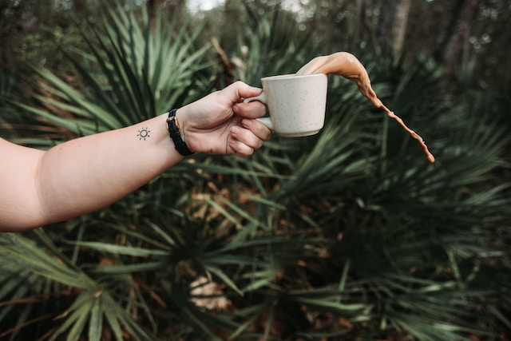
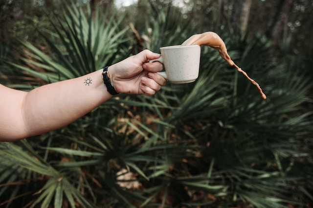

Don Raúl Páez emprendió su aventura por el amor al café en 1956 y durante los siguientes 59 años de su vida se dedicó a perfeccionar el arte de seleccionar y tostar los mejores granos arábigos en México, pues para él solo existía un café; el buen café. Contamos con más de 35 años de experiencia. Nuestro café es cuidadosamente seleccionado desde su origen por un Catador Certificado Q, asegurando la excelente calidad que caracteriza nuestros productos. Hoy buscamos transmitir esa misma pasión seleccionando los más finos granos de las más reconocidas fincas cafetaleras a nivel nacional.
Nuestro experto personal trabaja para satisfacer todas sus necesidades y superar sus expectativas. Nuestra misión es crear un entorno en el que nuestros clientes no tengan que preocuparse de nada. Nuestro joven equipo está altamente motivado para que el tiempo que pase con nosotros sea de la mejor calidad. Nuestro agradable y profesional equipo está disponible para su comodidad.
 
